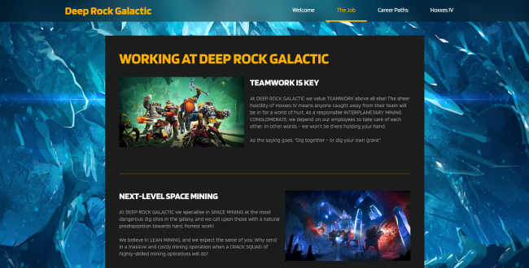
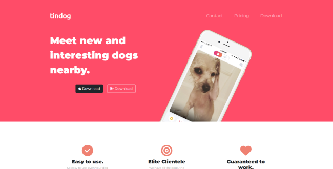
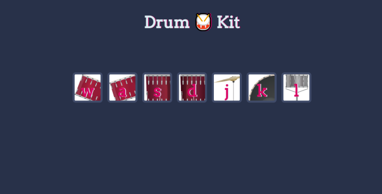
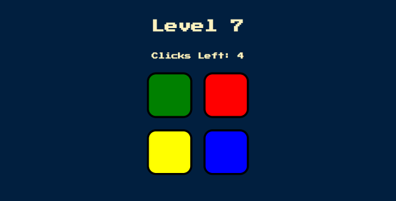
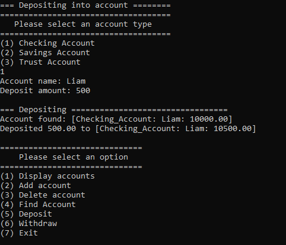

About Me
I am a Wichita State University computer science graduate. My interest in computers started at a young age, and that interest has led to me becoming a programmer. During my time at Wichita State I have become proficient at C++ and I have recently learned HTML, CSS, and JavaScript for web development. I am currently learning backend web development. This website will showcase some of the programming projects that I have done. Besides programming I also love playing video games, tennis, and pickleball.
Projects
The source code for some of the projects bellow, including this website, can be found at my GitHub here.
Deep Rock Galactic Landing Page
Deep Rock Galactic Landing Page

This project is a landing page for the fictional mining corporation Deep Rock Galactic, which is from one of my favorite video games
named after that company called Deep Rock Galactic. This website is responsive and it uses HTML, CSS and some of the JavaScript
library jQuery.
Live website can be found here
Live website can be found here
Tindog Landing Page
Tindog Landing Page

This project is a landing page for a fictional app called TinDog. TinDog is as it sounds and is like Tinder but for your dog.
I created this website using HTML, CSS and a CSS framework called Bootstrap.
Live website can be found here
Live website can be found here
Virtual Drum kit
Virtual Drum kit

This project is a virtual drum kit that plays sounds by clicking on the buttons or by pressing the corresponding key on
your keyboard. This site primarily uses JavaScript as well as HTML and CSS.
Live website can be found here
Live website can be found here
Simon Game
Simon Game

This project is a Simon game where you need to match the pattern that the game shows you. The pattern increases in length
after each successful match until you fail. This site uses the JavaScript library jQuery for all of the game logic as well as
HTML and CSS for the buttons.
Live website can be found here
Live website can be found here
Bank Accounts
Bank Accounts

This project emulates three different types of bank accounts checking, savings, and a trust account. The user can interact with these accounts
through a menu that has the options of display, add, delete, and find an account as well as deposit and withdraw. This project uses C++
object oriented programming and polymorphism. The three account types were made using a base class called accounts.
Source code can be found on my Github page here here
Source code can be found on my Github page here here